Analiza rješenja · JOI Spring Camp 2020 · Dan 1
Ukrašavanje zgrada 4
O ovom članku
Tekst je prijevod službene japanske prezentacije rješenja, preoblikovan u članak. Slajdovi su ugrađeni kao slike; natpis pod svakim slajdom je prijevod teksta na njemu. Dijelovi označeni kao trenerska napomena nisu u izvornoj prezentaciji — dodani su da popune korake koje slajdovi preskaču ili samo skiciraju.
Slajdovi
Uvod
izvorni slajdovi 1–2
-
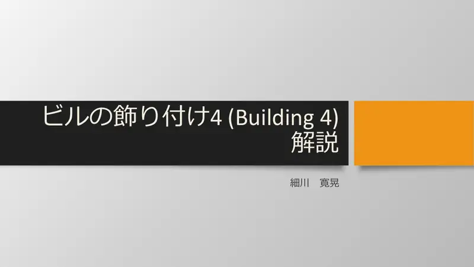
1Naslovni slajd: Ukrašavanje zgrada 4 (Building 4), analiza: Hosokawa. -
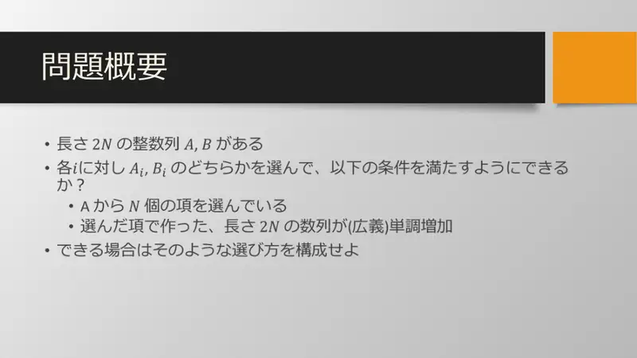
2Sažetak zadatka: iz dva niza $A$ i $B$ duljine $2N$ odabrati po jedan član na svakoj poziciji, točno $N$ iz $A$, tako da je dobiveni niz nepadajući.
← → tipke ili klik na sliku
Dinamičko programiranje
Slajdovi
Zašto DP i koje stanje
izvorni slajdovi 3–4
-
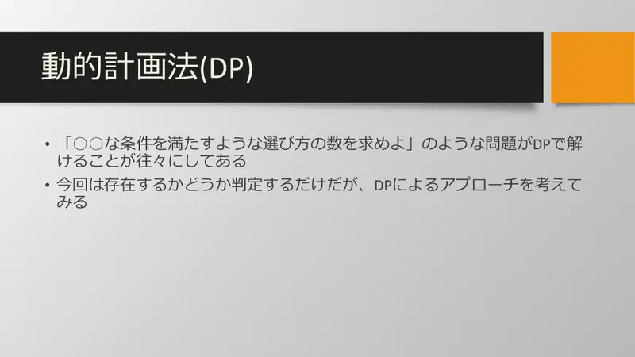
3Zadaci tipa „prebroji odabire koji zadovoljavaju uvjet” često se rješavaju DP-om. Ovdje samo odlučujemo postoji li rješenje, ali DP je i dalje prirodan pristup. -
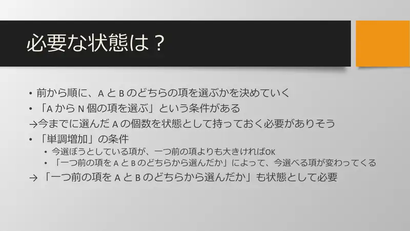
4Koje stanje? Idemo slijeva i biramo $A$ ili $B$. Uvjet „točno $N$ iz $A$” → moramo pamtiti koliko smo $A$ dosad odabrali. Uvjet monotonosti → dopušten je član $\ge$ prethodnog; koji članovi su dopušteni ovisi o tome je li prethodni bio iz $A$ ili $B$ → i to je dio stanja.
← → tipke ili klik na sliku
Podzadatak 1 11 bodova
Slajdovi
Booleov DP i rekonstrukcija
izvorni slajdovi 5–6
-
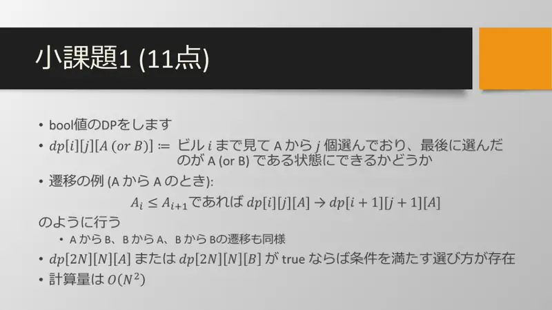
5$\mathrm{dp}[i][j][A\text{ ili }B]$ = može li se, gledajući zgrade do $i$, odabrati $j$ puta $A$ tako da je posljednji odabir $A$ (odnosno $B$). Prijelaz (za $A \to A$): ako $A_i \le A_{i+1}$, tada $\mathrm{dp}[i][j][A] \to \mathrm{dp}[i+1][j+1][A]$; analogno $A \to B$, $B \to A$, $B \to B$. Rješenje postoji ako je $\mathrm{dp}[2N][N][A]$ ili $\mathrm{dp}[2N][N][B]$ istinit. Složenost $O(N^2)$. -
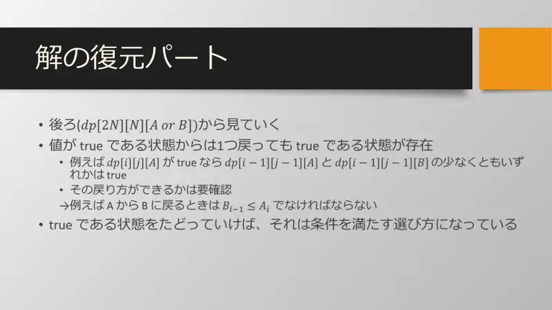
6Rekonstrukcija. Krećemo od $\mathrm{dp}[2N][N][\cdot]$ unatrag. Iz istinitog stanja uvijek postoji istinit prethodnik: npr. ako je $\mathrm{dp}[i][j][A]$ istinit, bar jedan od $\mathrm{dp}[i-1][j-1][A]$, $\mathrm{dp}[i-1][j-1][B]$ je istinit — ali treba provjeriti i smije li se vratiti (npr. $A \to B$ unatrag zahtijeva $B_{i-1} \le A_i$). Slijedeći istinita stanja dobivamo valjani odabir.
← → tipke ili klik na sliku
Podzadatak 2 89 bodova
Slajdovi
Dostižni brojevi čine interval
izvorni slajdovi 7–8
-
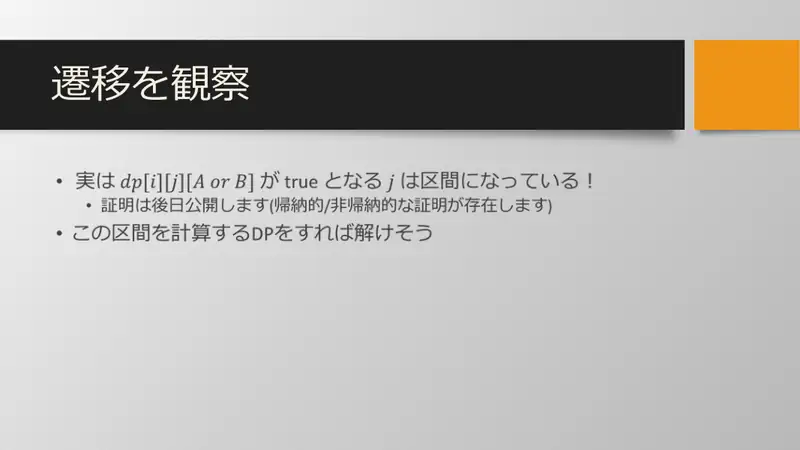
7Promotrimo prijelaze. Zapravo je skup $j$ za koje je $\mathrm{dp}[i][j][A\text{ ili }B]$ istinit interval! (Dokaz će biti objavljen naknadno; postoje induktivni i neinduktivni dokazi.) Dakle DP može računati samo taj interval. -
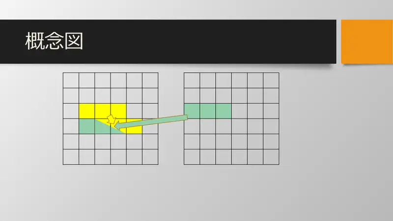
8Skica. Lijeva tablica: za fiksni $i$ (redak), dostižni $j$ (žuto) čine povezan blok; prijelaz (zeleno) preslikava blok u blok sljedećeg retka, pomaknut za jedan pri odabiru $A$. Desna tablica: unija dvaju blokova opet je blok.
← → tipke ili klik na sliku
Slajdovi
DP nad intervalima i rekonstrukcija
izvorni slajdovi 9–10
-
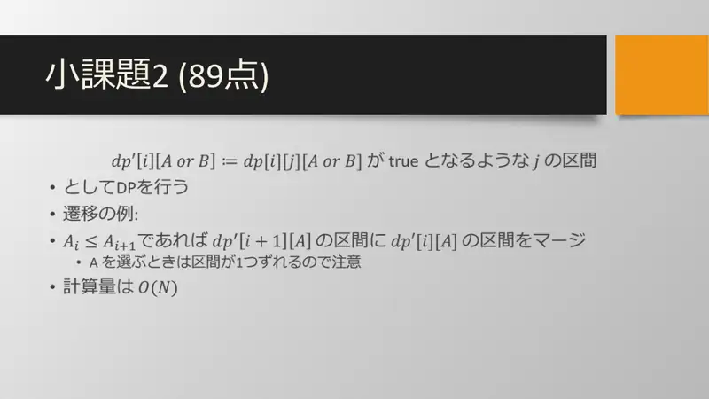
9$\mathrm{dp}'[i][A\text{ ili }B]$ := interval vrijednosti $j$ za koje je $\mathrm{dp}[i][j][\cdot]$ istinit. Prijelaz: ako $A_i \le A_{i+1}$, u interval $\mathrm{dp}'[i+1][A]$ spoji (unija) interval $\mathrm{dp}'[i][A]$ — pomaknut za $1$ jer biramo $A$. Složenost $O(N)$. -
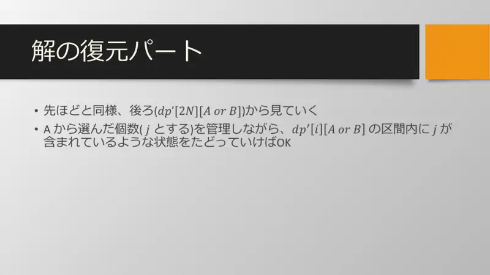
10Rekonstrukcija kao prije, unatrag od $\mathrm{dp}'[2N][\cdot]$: pamtimo trenutni broj odabranih $A$ ($j$) i prelazimo u ono stanje prethodne zgrade čiji interval sadrži odgovarajući $j$ (ili $j-1$) i koje zadovoljava monotonost.
← → tipke ili klik na sliku
Slajd
izvorni slajd 11
-
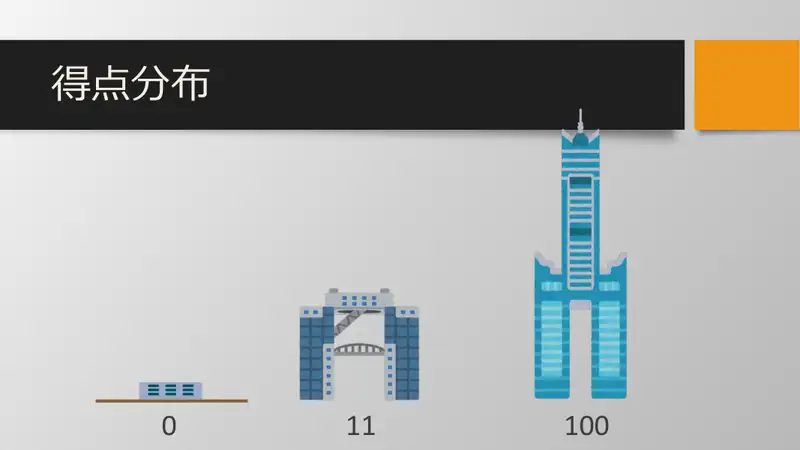
11Distribucija bodova: većina sudionika riješila je zadatak u cijelosti (100) ili samo prvi podzadatak (11).
Sažetak
- Stanje $(i, \text{broj } A, \text{posljednji plan})$ daje $O(N^2)$.
- Skup dostižnih brojeva $A$ za fiksni $(i, c)$ je interval → pamti samo krajeve, $O(N)$.
- Rekonstrukcija unatrag provjerom pripadnosti intervalu i monotonosti.